In Pursuit of the Good Life:
Finding that Perfect Country Place
by John Vivian
Here is what Real Estate ads don't tell you, trendy books don't feature and what brokers don't want you to know.
For most of us, a move to the country means declaring our freedom from an office or a plant or lifelong local roots. But freedom has a cost. Do you worry that sixfigure real estate prices, high property taxes, and rising bank interest rates will just have you swapping the urban rat race for a country-mouse version of the "Good Life"? Let's see if I can't convince you that the major purchase in your life - a home and a little land - needn't be nearly so expensive and constraining as . . . what is the going price for a home and lot today in one of the "prime" areas ... $140,000 or something equally rid iculous. To get control of your own life, all you need do is throw off the view that all the nice people live in a city or suburb, surrounded by automated appliances, new cars, and debt.
Begging for the moment the cheapest and most rewarding way to establish a homeplace (building it yourself on $400/acre "unimproved" land), the property descriptions you see above include not one word of fiction, but are taken from ads clipped from country periodicals and rural real estate flyers from the eastern and midwestern parts of the country I know personally over the past year or so (1995-'96).
These places aren't hovels either ... or lost and forgotten in some backwater. Backwater hovels don't get advertised. The homes are all solidly-built, livable, and located in or near fine little country communities. You can buy most of these places (if you can't avoid taking a conventional mortgage) for from $250/month to perhaps twice that. With one or another system of "creative-financing" you can usually tailor payments to your income. I'll get to that in a moment.
A 150-acre-plus farm for $400/acre?
Let's go a little deeper into that first ad. You might be tempted to think what far too many people already believe, that decent farm land costs $2,500/acre minimum, right? So how can you get that fine old Wisconsin (cheese-country) dairy farm for less than $400/acre? Well, the land has probably been in hay for two years.... I'd guess that a farmer retired, had no heir to keep the farm going, so he sold the herd and equipment and put the land and buildings on the block. Asking price is $67,000. Offer 40 and pay 54.
I wouldn't encourage you to take up dairy farming from scratch, but you could commute to a good day job in Eau Claire, rent a neighbor's equipment to plant and harvest a typical 50 bu/acre small-grain crop. In one good or two mediocre years the land will buy itself with cash left to buy next year's seed. Or, leave the land in hay, shift it gradually to alfalfa and clover, and start a grass-fed, organic beef herd. Or, if convenient to a good highway to town, plant a pick-your-own strawberry operation. Or plant a modern apple orchard; dwarf apple trees will produce more than the same acreage of standard trees and they don't take a generation to mature. No ladders are needed for harvest either, so you and your family, or a small crew of local high school students can start picking in two or three years. You'll have the land paid for by the fourth or fifth year and, with a 150 acres planted to orchard as you can afford time and planting stock, you can be financially independent for the rest of your life in six to ten years. I am not kidding! (More about "retirement-income orcharding" in the next issue.)
The ad from Maine may raise an eyebrow as well. Everybody knows that state-of-Maine coastal property goes for thousands of dollars a waterfront-foot, right? Mebbe for that stretch of stormlashed "Downeast" pink granite that some movie actor bought for a Hollywood price, or down on the sand coast an hour's drive from Boston and in walking distance of George & Barbara Bush's place. But the log cabin on a high bluff in an "undiscovered" area of Maine cited above would cost you less than $100/ft. Chain a flotilla of pinelogs in the deepwater bay out front, use a new state-funded program to start raising gourmet kelp for the Japanese and domestic sushi markets, and pay for your oceanside retreat in short order with seaweed that's free for the picking. Begin to look at each ad differently and start dreaming better.
Lower-Cost Housing
MOTHER regularly features articles on earth-berm, hay-bale, earthship, and many other forms of hand-made homes. Here are some other low-cash-outlay options to consider.
Mobile homes
The under-$5,000 mobile home listed above is an estate sale of an old but solid trailer in one of the many 50-year-or-older south Florida parks, so thick with palms, citrus trees, and flowering tropical vegetation you can barely see the homes - all on termite-proof concrete foundations with terazzo-floored glass/screen "Florida rooms," car ports, and wall-to-wall air conditioning. Many of them are better built than a brand new, $85,000 counterpart. In Florida, mobile prices seldom fall under the teens, but low-price ads like this one appear in northern newspaper classifieds from time to time when heirs to their late grandmother's retirement retreat don't have the time to manage and pay lot-rent and utilities for a place that's a continent's length away.
Start with getting photos of the inside, outside, and the park surroundings. A phone call to neighbors can alert you to problems and teach you something about the local social life, stores, pubic transportation, and other small but important details. Next, call the local Realty Board for the name of a nearby realtor/appraiser and spend a little for independent value and structural appraisals. The Better Business Bureau can let you know if the park operator has a bad reputation.
Fix-ups
When the back-to-the-land movement began in the '60s, we all yearned for an old New England farmstead we could restore as we lived the life. Many who stuck with it and did the restoration right benefited from the inflation of the '70s and '80s and parlayed a four- or five-figure investment into a place that would be advertised now as "Pristine c. 1790 Restored Colonial with 4 working fireplaces plus beehive oven on 5 acres with post & beam barn, brook and pond ... only $399,900." Run-down New England Colonials are hard to find, cost a bundle ... and the RE-inflation boom is over for our generation.
To parlay a small initial investment into a family home (say nothing of a six-figure fortune) these days, many of us will need to emulate the way the original homesteaders built those rambling Colonials ... by adding on in increments as prosperity and family increased. And - as modern homesteader Scott Nearing advises - they "paid as they went," building with their own labor, buying what materials they couldn't supply themselves with saved cash ... and avoiding that single greatest obstacle to independence: a long-term mortgage.
With few of us able to afford huge Colonial families, hired hands, or take up farming for a living - and few of us willing to wait generations to realize our dream - the incremental approach to homestead-building takes forms unknown in the Colonial days.
Camps
MOTHER has published plans for minihomes, and by all means, consider building a small place from scratch and adding on as time and cash permit. But a trend that hasn't been picked up by the national press to my knowledge is the upgrading and winterization of ready-made small homes: hunting and lake-side vacation cabins - collectively called "camps" in the North East. "Camps" range from tiny tar paper ice-fishing shacks to the log mansions built in the Adirondacks by the Vanderbilts, Jay Gould, and Will Durant back in the Golden Age.
Most reasonably-sized camps hark back to the 1920s or earlier, and come with a few acres of land sectioned out of what was thought to be worthless woods after it was logged off. Most structures are of basic wood-frame construction, uninsulated, with summer-only water systems. Many are half-abandoned. Tin roofs are common. Many I've seen sell in the low five-figures, and most have been fully paid-for for fifty years or more and owners are often happy to take a note or a private mortgage for a year or two.
Their big advantage over new construction is that in most places the building is "grandfathered" - meaning that it can be lived in as is indefinitely (at least for "seasonal" occupancy). So often-restrictive building codes don't apply until you make major changes, which must then meet the code. You can use the old wood-burning camp stove and outhouse while you work on the place, install a code-acceptable septic system, rebuild foundations or add rooms as needed. I can show you a dozen lovely small homes salvaged from what was little more than a shack - on a cash-as-available basis - by young marrieds or almost-retired couples. "Sweat-equity" at work.
But, be sure the local Code doesn't contain a "sleeper" clause requiring that if one major alteration is made - say, a new roof - the whole place (frame, doors and windows, septic, water, etc.) must be brought up to code before an occupancy permit will be issued.
Partly-developed land
The countryside everywhere is sprinkled with false starts where folks only partially realized their own country dream. The landscape is dotted with plots of land with only a foundation in ... or a driveway and utilities ... or just a septic system installed. I can show you a half-dozen house shells: log cabins, modern solar homes, conventional frame dwellings that were framed and roofed but are empty inside. Many still carry a mortgage, and if the bank likes your credit history and prospects, they'll happily let you assume mortgage payments - in effect, getting the former owners downpayment and much of what has been built for nothing.
This technique - taking over a mortgage from some unfortunate soul who's lost a job or otherwise can't keep up payments - is all there is to those "Make-a-million in Real Estate" courses you see advertised on TV in the wee hours. So avoid the course, read on, and save another $300.
Look in the country-paper RE ads for the terms "possible owner-financing" or "assume Mtg. pmts." and drive a hard deal - especially if you have a strong credit rating, a good income, and are dealing with a bank or a real estate speculator. I know one such situation where a local S&L bank had been stuck with an old place they'd foreclosed on for over a year (banks hate being in the real estate business). The price was gradually lowered from the high twenties to $15,000. They finally sold it for $3,900, no money down, and financed the full sum with a no-added-collateral personal loan - same as a used car.
One aside about those TV courses. As often as not, the poor victim you end up buying from is another buyer of the TV course who has over-extended himself. At its worst, the technique suggested is dealing in slums - buying rental properties and milking them - taking rent but putting nothing back into the building. The TV ads promise "an immediate cash income" after buying a property "no money down." That's rent money, folks, usually from people who have genuine difficulty getting it together each month. Lots of luck getting it from them.
At best, however, by assuming a mortgage you can often get a real bargain and free someone who has had hard luck from a burden he'll be glad to relinquish.
FOUR MUST HAVE MAPS
You will need a variety of maps to research a potential new country home area.
Roadmap. A national road map such as Rand-McNally contains a wealth of information, and is a bargain at under $10. Available at any newsstand. Smaller-scale - thus more detailed - "Grand Maps" are published by regional firms.
3D State Maps. The best way to visualize the topography of a state at a glance is to get the Real Goods catalog (555 Leslie St., Ukiah, CA 95482-5507, 707-468-9292) and order a Raven 3D map for $25 (available only for Eastern and western states, as most of the midwestern Great Plains is flat).
Marine Chart. To prospect country near navigable water, order marine charts that give details of the waterway as well as inland for a mile or so from any of the marine supply outlets that advertise in the boating magazines. Be sure to get (free), "Chart #1" that tells you how to interpret the maps.
Topos. Once you narrow down your locale choices, get topographic maps of areas of interest. Developed by U.S. Geological Survey (Dept. of Transportation) these highly detailed color maps show elevations, waterways, and natural features - including every house, pond, barn, baseball field, and golf course visible from the air or a mapping satellite. Available folded for $2.50 apiece from government printing offices (Pueblo, CO 80225 or Reston, VA 22092), but rolled topos are obtainable a lot faster (and for a bit more - $4.00 is typical) from your local sporting goods store. Get a guide to reading the maps if you are a novice. A topo will tell you more than you can learn by walking the land.
First Comes the Land
To you and me, at least as important as structures is the lay, look, and arability of the land. At first, we all think we want big acreage - or at least want to own "both sides of the road" - if only to protect against having unwanted neighbors. The cheapest way to accomplish this is to find a small parcel butting up against a state or national park or other government-owned preserve or against a major wetland of any ownership. Finding such properties takes a lot of looking - much of it map research (see "Four Must-Have Maps").
You may scope out an ideal piece of unimproved land that is privately owned. If it is in an isolated location, or if nearby farmers don't know the owner, go to the land office (town office in municipalities) and find out who owns it. Often, large tracts are owned by corporations, estates, banks, or absentee landlords as an investment.
It may take some persuasion to work a deal, but raw land can be cheap: a few hundred dollars an acre compared to $1,000/acre and up (and UP) for typical country parcels with road frontage in the East. Surveyed and subdivided, a five-acre lot can cost $20,000 or more - a sum that can get you 100 acres and more bought "raw."
You'll need a lawyer and may have to pay $2,500 and up for a survey. But try to purchase a small parcel and buy a "first refusal" on all the surrounding property. Then, for a few hundred dollars, you have a legal right to buy specified parcels of land (at market price) before it can be sold to another buyer. In areas that are not undergoing development, your little sale may be forgotten but for documents on file. You could then enjoy an estate and pay taxes on a house lot.
In other parts of the country, you may be able to lease a plot for 99 years at a reasonable cost per acre. In 99 years (unless the lease is renegotiated) your heirs lose any building you erect, so don't build a mansion. In the Northeast, land-leasing is common around lakes and in scenic mountain areas, and can be a bargain. Again, hire a lawyer to assure having full vehicular access and building, water, etc., rights.
Zoning in many populated areas requires that building lots be a minimum size and have a minimum amount of road frontage (or that an approved road be built in and by you ). Be sure your lot satisfies the zoning laws before you put a cent down.
Some areas ignore road frontage, and approve rights-of-way to back-lots through abutting property. In lake country, many properties not on the shore may have a deeded right-of-way to the water. Logging or fire-access roads may exist on paper only. I know of a luxury mountain-home property where a logging-road ROW goes up the drive, under the living room bay window, and on up the road and through the middle of their new garage/barn. If the mountain is ever logged off, they cannot stop the skidders and timberjacks. Some ancient ROWS may not be in your deed - but exist in someone else's. This can lead to expensive litigation. Where land-ownership is concerned, even low-cost back-country deals need to be expertly lawyered.
In most populated areas, your land must pass a percolation test (be able to absorb a given amount of water in a given amount of time) before a septic system plan or permit is approved. Be sure your land perks or you will not be able to build without paying to haul in tons of gravel to make a septic leach field. I know one couple that paid more for their gravel bed (at $250/dumptruck load) than for their land.
A "perk test" is not done by digging a hole with a shovel and dumping in a bucket of water. By law, a backhoe digs a pit and it is filled from a tanker. Then, an engineer has to measure how fast the water level drops. I know of one glorious mountain property (called "The Lookout" by us locals) that has a spectacular view of ocean islands, a stream with a waterfall, mature pines and all - but is located on a ledge. The too-shallow soil is pockmarked with unsuccessful perk-pits dug by a succession of disappointed would-be purchasers lured by ads placed by the latest owner. Will Smoot, the local excavating contractor who has to haul his ($250/hr. point-to-point) tractor three miles up the mountain to dig each set of pits, says: "Selling off 'The Lookout' was the smartest thing that granddad ever done. This is the second tractor its bought and paid for and I don't see no end to it."
Some enlightened locales will award a residency permit on unperkable land if you install approved composting or gas-incinerator toilets and convince them that your "grey water" - wash water - will go into the garden. But get approval in writing before you buy. Again, you must invest $200 to $1,000 - more for complex matters - in the services of a locally-experienced RE lawyer.
The cheapest (and, often the most scenic) land is found in the far boondocks. "Jeep roads" as labeled on topo maps are boulder-strewn mud or sand tracks that can bog any wheeled vehicle in shifting sand or spring and fall slop and be unplowable in a snowy winter. If you have to build an all-weather road for any distance, you are in for major costs (a big bulldozer or road grader costs upwards of $800 an hour).
You can eschew roads and live a primitive life in remote isolation if you like. I like, but only in good weather and not for very long at a time. My own cabin in the woods functions with an outhouse, hand-dug fresh rainwater cistern, wood heat, and kerosene light and utilities. I've not yet spent a whole winter mushing or boating in all my supplies and doubt I ever will; I have work to do, and it is a full-time job just to stay warm and reasonably well-fed in winter when everything must be done by hand. Plus, I'm no longer a kid. In total isolation, a strained back can be a major problem, and a broken leg could be fatal.
Providing even the most basic modern amenities to a distant location is not easy. If you plan to live "on the grid" - using commercial electric power and phone lines - figure paying the electric utility $30,000 a mile to set poles and string cable. That's not a mistake: thirty thousand dollars a mile ... on flat land. If you go "off the grid," you can buy a solar-electric, diesel-electric or hybrid power plant and run it for a lifetime for that sum.
Cell phones do reach into some remote areas, and they aren't exorbitant compared to stringing Ma Bell–style lines. A top-grade marine-style private satellite phone link costs $7,500 plus a hefty time-charge these days, but that price is falling. Bone up on alternative power and communications technology and save your pennies before deciding to live off-grid. It is the ultimate in self-reliance, but it may make that remote piece of land less of a bargain than you'd bargained for.
The Search
Now to cut to the chase. How to find that property?
The climate maps seen on these pages will lay out the broad temperature, rainfall and growing areas of the country. In my experience, you'll do best staying close to the climatic zone you were raised in. I know Yankees who just can't take week after week of 90 degrees Fahrenheit, Texas humidity, and find okra slimy and grits tasteless. Then there are the Johnny-Rebs who gag at the mere thought of clam chowder, think winter squash is bitter, and are miserable in six months of Maine snow.
Consider carefully how near/far you should be from relatives (yours or your spouse's - despite the tired old mother-in-law jokes). "Being closer to grandchildren" or "being able to see my mom more often" is the reason many people in our Community Survey reported for disliking or wanting to change locations.
Now, start collecting charts, maps, and other research material (See sidebar The "Four-Must Have" Maps).
Your phone book has a number where you can order any phone book in the land and have it billed to your own account. Get the books for all areas you are interested in. The Yellow Pages will give you a wealth of information about business in the area. If your last name is Svensen and you find three pages of Johansens, Johnsons, Jorgensens and other Scandinavian names in the White Pages, you ought to fit right in.
Find the address of the local newspaper and subscribe - both to the weekend edition and the issue containing the most real estate ads. Don't be shocked if most country places you'll be looking at will only have a weekly - and that if you're lucky. After a few weeks of reading the paper you will not only know the area, but have an idea of land and property availability.
If you have a computer with a CD-ROM drive, you should get "Street Atlas U.S.A." for Mac or Windows by DeLorme Mapping. They have made one-off copies of the 1:2,5000-scale Geological Survey maps of the entire country, recolored it and put the entire nation on one disc. You can locate (and print out in color if you like) maps that show every highway, road, street, and named or numbered goat path in the US. of A. Cost is about $50 through any mail order computer-goods catalog. The CD offers more detail for towns and cities than for open country, as elevation lines weren't taken off.
Computers and the Internet
Then again, you can call up sections of the DeLorme CD from the Internet (but it is slow unless you have a super-fast modem and computer). Which brings me to the best way to prospect for real estate - on "the Net."
Upwards of 10,000 real estate brokers, large and small, are advertising homes on "the Net." Cost is so low that every real estate broker who takes the business half seriously will have a "Home Page" on the Internet by 1997. You'll be able to find (and print if you like) photos and specs of every property for sale in North America - and eventually the world - from the Internet.
If you really want to move to the country and have any use at all for a data-processing device, there is no better investment than a computer, high-speed modem and printer, and a $20/month account on the Internet. If you don't want to give in to the computer revolution or spend the $2,000 it takes, get an Internet account of your own to access using the machines at your public Library. Or wait till early 1997 and get one of the new Network Computers. These hand-held electronic devices built primarily to surf the Internet and display information on your TV set will sell for about as much as a new Sega computer game. A single protocol was agreed to by IBM, Apple, and all the major industry firms but Microsoft. Oracle is leading the consortium, making the major access software and exhibited a prototype to the industry last spring that was made from off-the-shelf components costing about $300.
OR you can spend a lot more than $500 in phone calls, mailings, and pavement-pounding. See Sources for by-mail information. However you do it, you'll end up dealing with Real Estate Brokers.
The Brokers
Brokers make a business of connecting property buyers and sellers, and work on commission - typically 6 to 8 percent of sale price for close-in-town properties, 10 to 12 percent for properties a long drive from the office. Sellers pay the commission, so the broker works for them. Not all states require that this fact be made known to the buyer. Most brokers in good markets subscribe to the local MLS (multiple-listing service) where all brokers list most properties after they have tried to sell them as an "exclusive" for a few weeks. The listing and selling brokers split the commission 60/40, or another locally-accepted formula.
A stylized "R" on a sign means that the broker at least has signed a code of ethics, and real estate agents must pass a state licensing exam. Neither of these hurdles, unfortunately, guarantees that your broker is honest or knows his or her business. A better indication is a local firm that is affiliated with one of the big national "chains" of independently-owned offices such as Century 21, United Farm, Coldwell-Banker, and others. However, brokers join the nationals in large part to have their listings exposed to executives who move from city to city. As a result, they tend to list the more expensive "executive"-type homes.
Smaller, more rustic, less expensive rural properties are often exclusive listings of small, strictly local brokers - who may or may not be members of the regional multiple-listing association. Anybody can get licensed to do this kind of business, and many job-holders moonlight as realtors after hours and on weekends when activity is greatest. But I can honestly say that I have never dealt with a country broker who failed to take me (first thing) to the place I eventually purchased or leased (even if I insisted on seeing a dozen others) ... at a more than fair price ... and who did not later become a valued friend. You can't miss them: they could stand to lose a few pounds, wear really comfortable walking shoes, and look you straight in the eye from the very start.
Creative Financing
In conventional real estate financing, you make out a lengthy net-worth statement revealing everything you own or owe, and sign a waiver giving a mortgage banker permission to investigate your personal and financial history from birth. Using your name, birth date, maiden name of your mother and Social Security Number, they get your records from semisecret regional credit-reporting firms to which most lenders report every credit transaction each month. If you've had a disagreement over a car loan or forgot to mail the electric bill or missed a payment for more than a month, they'll know it.
Assuming you pass, they then tell you how much you can borrow. Formulas vary, but depend on income and "credit worthiness" (to a banker, money is Life, loan-repayment is phrased in high moral, ecclesiastical terms). Banks generally expect you to put 20 percent of the sale price "down" - so you have your own cash in the deal and will be disinclined to risk losing it by defaulting on the loan.
Then, they reduce your monthly income by state and federal income taxes, alimony and child support, car payments, credit card payments, and insurance on the house you want to buy. If there's anything left, they take about half of that and figure you can use it to buy a house. (Or they will let you assume a mortgage cost that is between 28 and 36 percent of monthly "gross income" - your paycheck less taxes, union dues and repayment of bad debts, IRS liens, and other financial sins against Mammon.)
You can get a mortgage-calculator on the Internet, in Personal Finance computer programs and in many books, but here is a basic one:
So, say you have $500/month left for the mortgage-payment, and interest rate for a 30-year mortgage is 7.5 percent this week, a bank would let you borrow $71,500 to buy a homeplace (500 divided by 6.99). Grossed up by your 20 percent down, that will get you a place selling for $86,000.
That won't get you much in San Francisco (highest-priced RE market in the U.S. in the latest survey by the National Association of Homebuilders - data for last quarter of '95). But, in the NAH's lowest-priced market, Lima, Ohio, $86,000 would get you a brand-new four-bedroom family home in the latest cornfield being consumed by a housing development. (By coincidence or not, Lima is in one of MOTHER'S "Top Ten" areas to live the Good Life as revealed in our Community Survey. Still, it is debatable which is a better contribution to the economy by an acre of prime Ohio farmland: production of 50 bushels of grain per year forever or the combination of some land speculator's 1,000 percent profit, sales of a house-load California Fir-lumber, a month or two of local construction jobs, and decades of future property taxes that combine in a new split-level dream home.)
The Penalties of Voluntary Simplicity
However, if you reduce your income needs sufficiently to escape the system, you may not meet a bank's income requirements. Or the run-down, sagebrush-choked sheep ranch in New Mexico may not qualify in their steely eye. Or, you may want to pay for the place over the two-and-a-half years you plan to continue scrimping as you labor in your town so as to be mortgage-free when you Make The Move to the country.
Here is where creative financing comes in. The books can give you details. But do your best to have the property owner take a note for whatever you can't pay up front - for the shortest repayment period you can handle by practicing frugality and diverting money from that new car, those restaurant meals, and the vacation to Acapulco into the new place. That's called Owner Financing and owners of unusual or hard-to-sell properties become more amenable to the idea the longer the place is on the market.
You might do a Bridge-Loan, where you hold onto your current home till you get a good purchase-offer (maybe renting it in the interim if the rental-housing market is tight). Cook a bridge-mortgage to cover both properties while the old place is on the market.
Another option is Lease-to-buy or Rent-to-buy where you don't need a cent of down money, but apply part of a rental or lease payment toward purchase.
Realtors these days can come up with all sorts of crafty formulas to move a property - such as "Balloon Payments," where you pay small amounts for a certain time, then deliver the balance in a lump sum... say, when our original home sells, or when you get paid for that first giant order of baby cactus from Japan. Especially if there's no bank involved, be sure you have a good lawyer working for you.
DO NOT let yourself get suckered by a Finance Company. These sharks advertise in all the real estate media and you'd think they are giving mortgage money away to "No-Credit, Bad-Credit, Divorces, Bankruptcies, Payoffs." Not being a chartered lending institution, they are not licensed or regulated by federal or state banking agencies. They answer (if at all) only to consumer-protection regulations - and can charge any rate a credit card is permitted in your state (and, they can add on any "Fees" they like-to effectively raise rates higher still).
Finance Company offices are invariably headquartered outside your state, making governmental oversight or regulation of their practices even harder. Few of them retain the same business name or charter very long, so can be impossible to trace. Checking on the principal's business history is equally difficult. Plus, if stiffed, their collection techniques can be right out of The Godfather. Guess why.
INFORMATION SOURCES
Following is a list of telephone and on-line numbers, mail and Internet addresses, TV programs, books and magazines where you can find information on locating, evaluating, and buying country real estate.
Locating an Out-of-Town Broker
Real estate brokers can be expert in only a very limited geographic area, so have welcomed "information-age" technologies that connect them with allied brokers all across the continent. You can tap these networks as well in researching a new location.
"Gallery of Homes," with its walls of color photos, mounted an early effort to give brokers a nation-wide perspective. Other national networks of (individually-owned and operated) offices include ERA, Century 21, Coldwell Banker, and others - many affiliated with large, well-funded parent companies such as American Express or a major insurance company. Each local office can connect you with an affiliate nearest to where you are going. So call them all. Then begin going through the following list.
United National Real Estate, 1600 N. Conington Ave., PO Box 34317, Kansas City, MO 64120-9922 (1-800-999-1020) is successor to the old United Farm Agency that, along with Strout Realty, began offering national advertising and connections to rural realtors back in the 1930s. United's 200-page seasonal magazine of nation-wide rural real estate listings, United Country is sold (currently for $4.95) on news stands or by mail at $7.95 for two issues ($13.95 in Canada).
They'll help you with a property search as well. Send the home office a note giving your name, address, and phone plus type of property, location, acreage, and price range you are interested in. You'll receive flyers from several associated realtors in the area, and can take it from there. Many United associates are small offices in small towns - just the folks who may know about the property you are looking for.
National Association of Real Estate Publishers (NAREP) is a consortium of independent HOMES-type magazines from coast to coast. Call their representative at 1-800-753-3643 or send a postcard to The Moving Line, 378 Allison Ave SW, Roanoke, VA 24016 for a copy of their subscription form and questionnaire. You'll be able to order real estate magazines from Colorado, Hawaii, both Carolinas, W. Virginia and 15 or 20 more states. For $2 to $3 you can have the quarterly to bi-weekly magazines printed in the areas you are considering mailed directly to your home. At no charge, you can also order a relocation kit, plus information on moving, mortgage, and banking services.
Magazines
HOMES magazine is one of the above-mentioned freebies. You see - and ignore - them in the front entry of the supermarket until you begin looking for a new place. Then, you can't wait to devour each new edition. Published locally for most states (or sections of states), they list properties chosen by major realtors in the areawho may or may not be associated with a national marketing firm. Call and they'll be glad to send you magazines from one or several locations. No charge. Phone: 1-800-542-4224. Internet: http://www.homesmag.odc.com . E-Mail: homessmag@odc.com .
The Real Estate Book is another free magazine-this one in full color. For a copy from most parts of North America, call 1-800-841-3401.
Television
Your New House is an exception to the brain-dead TV shows that assume million dollar budgets for home improvements. A new, innovative and fast-paced new series out of Dallas Tex., it features short, meaty segments on all aspects of housing - including the purchase decision and buying process. It offers tapes of programs and much hard "you-can-do-it" type info, including mortgage calculators by mail or Internet. Your New House, 14860 Montfort Drive., Suite 240, Dallas, TX 75240. lnternet: http://YourNewHouse.com.
Off-to-the-Country Books
Authors of the titles below are former or current California RE brokers, RE lawyers, or relocation consultants who are also unabashed self promoters, so the books are not produced by real publishers but by marketing and "self-help" presses. Mother readers may find them environmentally-insensitive and mercenary in outlook. They are best on Western lands and laws - they seem to assume that all states have water problems and are laid out in nice square sections, whereas here in New England we are overwatered these days, thanks to an errant Jet Stream, by precipitation that belongs properly in the parched Southwest. And our country property lines are described in 200-year-old deeds as "... a stream to along stone wall to a large chestnut..." where the stream has meandered into the next township, the wall is crumbling and the chestnut died of the blight in '29."
But one or more of the following is must reading for anyone new to country living and real estate. The best are sold by MOTHER'S Book Store.
Finding and Buying Your Place in the Country . Les and Carol Scher. Dearborn Financial publishing. 410 pages, $25.95.
Third edition of a fat, large-format book that has sold steadily since first published in 1974. Worth the price ... even if the authors seem to hurry through sections on locating and evaluating land and buildings to drone on for page after page on legal technicalities of property transfer. Proof if you need it that you need a RE lawyer. You do (and the authors obligingly provide their own office address and phone number at the end of the book).
COUNTRY BOUND! Marilyn and Tom Ross. Communication Creativity. (800) 331-8358. 430 pages, $20.
Subtitled "Trade Your Business Suit Blues for Blue Jean Dreams," its "Living on the Land" segment takes up less than two pages and suggests that growing all your own food and the other labors of rural self-sufficiency take too much time and effort; authors tried living on an isolated ranch, but gave up and returned to town. But they aren't the only ones, and their book is positively crammed with practical tips and a whole list of lists - of tax rates, what to look for in scoping out a house or a potential hometown, and more. Buy it for the check-lists alone.
Discover the Good Life in Rural America . Bob Bone. Communications Creativity, $12.95.
By a United Country broker/lecturer who could probably sell sno-cones in the Arctic, this little 150-page primer covers all bases quickly, but with an infectious excitement that will go far to convince skeptics that your country-living dream is possible.
Rule of Thumb XXV: The Standard in Pricing Small Business . Chad Simmons. Simmons Investment Company. $12.95 .
Get this ugly little home-published book before you get half-serious about buying that quaint little General Store with a real cracker barrel, a potbelly stove, and (most likely) a twodecade history of losing money. Written by an executive with United National, this was originally meant to train real estate sales people, so it pushes the numbers and pulls no punches in pointing you toward "what you need instead of what you (think you) want."
Government Publications - 250 of them cheap or free - on housing, education, farming, health, food, and more. For ordering info by mail: Government Publications Document Distribution Center, Pueblo CO 81009. Call: (202) 208-7679. Internet: E-Mail "Send Into" to ( cic.info@pueblo.gsa.gov ).
Helpful Pages on the Internet
All addresses below are preceded by: http:// to get you on the Internet ... www on some addresses will get you on the World Wide Web ... the rest is the individual address.
Government Homeowner Information Services Consumer Info. Catalog
( http://www.gsa.gov/staff/pa/clc/housing. html ) Intentional communities Cohousing Network
( http://seclab.cs.ucdavis.edu/-stanifor/cohousing.html ) Mortgage Companies
(offering advice, calculator software, and $$) Norwest
( http://www.norwest.com,/cardsvc/mortgage/home.html ) Mortgage Tech
( http://www.cul.com/dafife )
Realtors Online
Search yourself by locale/real estate for homepages of realtors. At this point, even the smallest brokers are investing in a Home Page. These services make the quest a little easier.
Search Services
Accunet ( 199.199.167.21:8)
For Sale by Owner Connection ( http://www.crocker.com/byowner )
Homeward Bound ( http://www.webquill.com/homebd.html )
Properties Online ( http://propol.com )
|
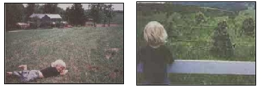 Gunner Evensen ? William and Linda Evensen's boy ? near his Levees, W. Va. home. |
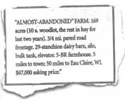 Roger Randolph at his ranch near Lake Powell, Utah. |
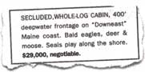 Tim and Stoney Scott walking Long Cove off Port L'Hebert two hours from Halifax, Nova Scotia. Homesteaders searching for more reasonable prices than Maine offers would do well taking a look at the Maritimes. |
|
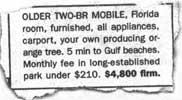 Left: Summer, Kyle, and Brooke Worlton hiking back to their home in the heart of the Cascades (14 miles outside of Brookings, Oregon). Right: Overlooking the coastal range, Summer, Cecilia, and Kyle Worlton heading up cattle. |
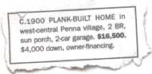 |
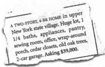 |
|
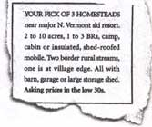 |
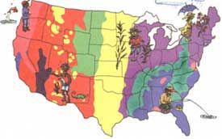 |
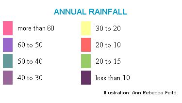 |
|
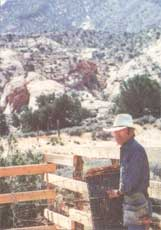 |
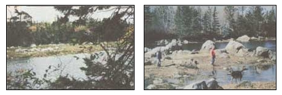 |
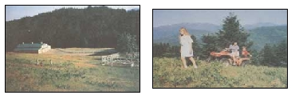 |
|
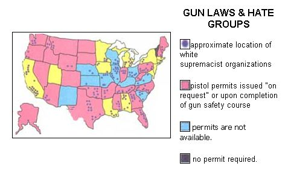 |
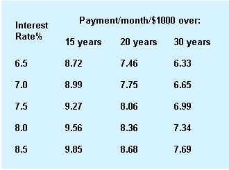 |
|